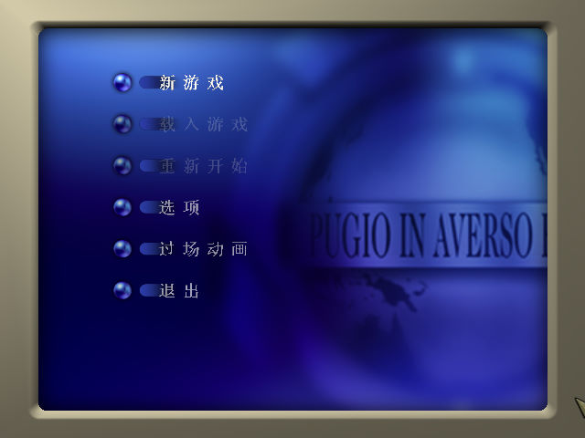
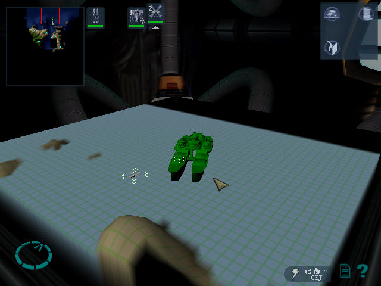
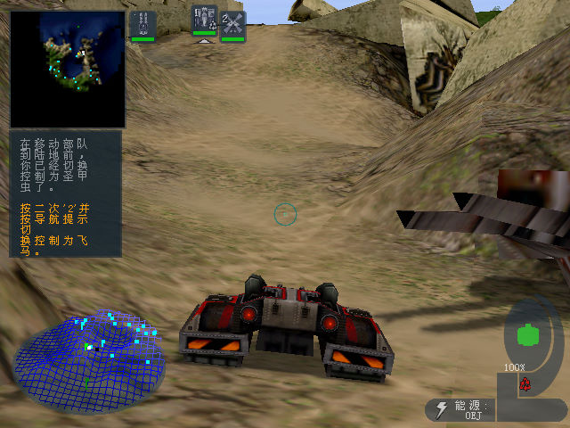

名稱：敵對水域／惡水之戰／魔鬼潛艦：安泰崛起／安泰起義 (Hostile Waters: Antaeus Rising，簡中／英文版) 簡介：Rage 2001年出品的即時戰略遊戲 [待補]。


保護：無 備註：非安裝移機者，需設定下列Registry（假設安裝目錄為C:\HostileWaters）： [HKEY_LOCAL_MACHINE\SOFTWARE\Rage Software\Hostile Waters\1.00.000] [HKEY_LOCAL_MACHINE\SOFTWARE\WOW6432Node\Rage Software\Hostile Waters\1.00.000] "InstallPath"="C:\\HostileWaters" 備註：VirtualBox無法執行，虛擬機請使用VMware。 備註：VMware若要執行HostileSetup.exe，請搭配DxWnd。 檔案：chs.rar = 簡中漢化檔（需在簡中系統執行，否則會亂碼）